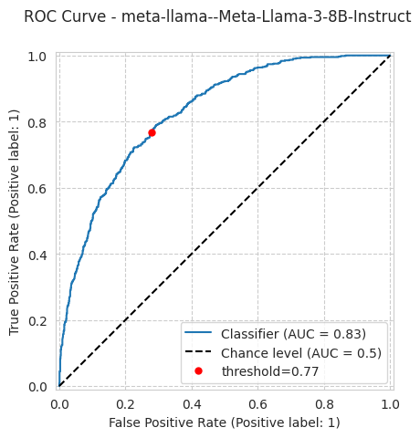
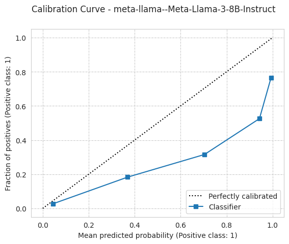
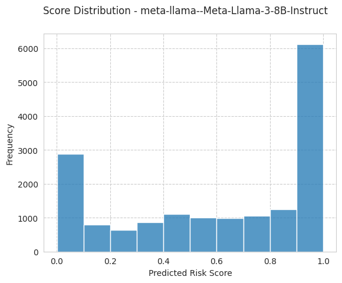
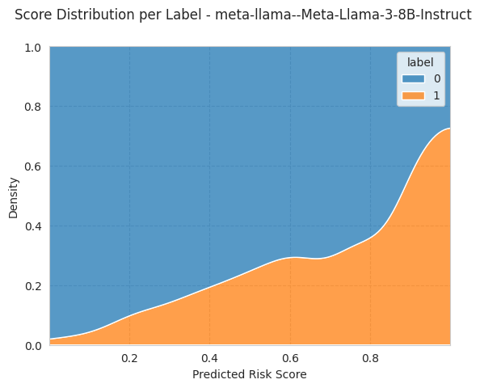
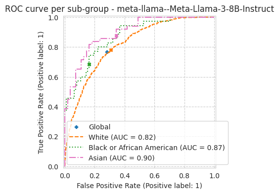
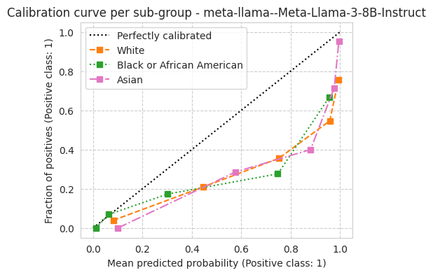

Example: Run ACS benchmark task
[1]:
import folktexts
print(f"{folktexts.__version__=}")
folktexts.__version__='0.6.0'
[2]:
from pathlib import Path
import torch
import numpy as np
import pandas as pd
[3]:
import logging
logging.getLogger().setLevel(logging.INFO)
Set important local paths
NOTE: Can be ignored if you haven’t previously downloaded the model, just use load_model_tokenizer with the model’s name on Huggingface.
Set your root directory (change as appropriate):
[4]:
ROOT_DIR = Path("/fast/groups/sf")
ROOT_DIR
[4]:
PosixPath('/fast/groups/sf')
Directory where LLMs are saved (change as appropriate):
[5]:
MODELS_DIR = ROOT_DIR / "huggingface-models"
Directory where data is saved or will be saved to (change as appropriate):
[6]:
DATA_DIR = ROOT_DIR / "data"
Other configs:
[7]:
MODEL_NAME = "meta-llama/Meta-Llama-3-8B-Instruct"
# MODEL_NAME = "google/gemma-2b" # Smaller model that is faster to run
TASK_NAME = "ACSIncome"
RESULTS_ROOT_DIR = ROOT_DIR / "folktexts-results"
[8]:
from folktexts.llm_utils import load_model_tokenizer, get_model_folder_path
model_folder_path = get_model_folder_path(model_name=MODEL_NAME, root_dir=MODELS_DIR)
model, tokenizer = load_model_tokenizer(model_folder_path)
[9]:
results_dir = RESULTS_ROOT_DIR / Path(model_folder_path).name
results_dir.mkdir(exist_ok=True, parents=True)
results_dir
[9]:
PosixPath('/fast/groups/sf/folktexts-results/meta-llama--Meta-Llama-3-8B-Instruct')
Construct LLM Classifier
NOTE: Also compatible with models hosted through a web API by using the WebAPILLMClassifier class instead of TransformersLLMClassifier.
Load prediction task (which maps tabular data to text):
[10]:
from folktexts.acs import ACSTaskMetadata
task = ACSTaskMetadata.get_task(TASK_NAME, use_numeric_qa=False)
[11]:
from folktexts.classifier import TransformersLLMClassifier
llm_clf = TransformersLLMClassifier(
model=model,
tokenizer=tokenizer,
task=task,
batch_size=32,
context_size=1000,
)
Load Dataset
[12]:
%%time
from folktexts.acs import ACSDataset
dataset = ACSDataset.make_from_task(task=task, cache_dir=DATA_DIR)
Loading ACS data...
CPU times: user 23.1 s, sys: 12.3 s, total: 35.4 s
Wall time: 35.5 s
Optionally, subsample to quickly get approximate results:
[13]:
dataset.subsample(0.01)
print(f"{dataset.subsampling=}")
dataset.subsampling=0.01
Load and run ACS Benchmark
Note: Helper constructors exist at Benchmark.make_acs_benchmark and Benchmark.make_benchmark that avoid the above boilerplate code.
[14]:
from folktexts.benchmark import BenchmarkConfig, Benchmark
bench = Benchmark(llm_clf=llm_clf, dataset=dataset)
Here’s an example prompt for the current prediction task:
[15]:
X_sample, _y_sample = dataset.sample_n_train_examples(n=1)
print(llm_clf.encode_row(X_sample.iloc[0], question=llm_clf.task.question))
The following data corresponds to a survey respondent. The survey was conducted among US residents in 2018. Please answer the question based on the information provided. The data provided is enough to reach an approximate answer.
Information:
- The age is: 37 years old.
- The class of worker is: Owner of non-incorporated business, professional practice, or farm.
- The highest educational attainment is: Regular high school diploma.
- The marital status is: Married.
- The occupation is: Painters and paperhangers.
- The place of birth is: New Jersey.
- The relationship to the reference person in the survey is: The reference person itself.
- The usual number of hours worked per week is: 40 hours.
- The sex is: Male.
- The race is: White.
Question: What is this person's estimated yearly income?
A. Below $50,000.
B. Above $50,000.
Answer:
Optionally, you can fit the model’s threshold on a few data samples.
This is generally quite fast as it is not fine-tuning; it only changes one parameter: the llm_clf.threshold.
[16]:
%%time
X_sample, y_sample = dataset.sample_n_train_examples(n=50)
llm_clf.fit(X_sample, y_sample)
CPU times: user 4.43 s, sys: 53.2 ms, total: 4.49 s
Wall time: 4.49 s
[16]:
TransformersLLMClassifier(encode_row=functools.partial(<function encode_row_prompt at 0x13238d943eb0>, task=ACSTaskMetadata(name='ACSIncome', features=['AGEP', 'COW', 'SCHL', 'MAR', 'OCCP', 'POBP', 'RELP', 'WKHP', 'SEX', 'RAC1P'], target='PINCP', cols_to_text={'AGEP': <folktexts.col_to_text.ColumnToText object at 0x1324ce0b6620>, 'COW': <folktexts.col_to_text.ColumnToTe...
128253: AddedToken("<|reserved_special_token_248|>", rstrip=False, lstrip=False, single_word=False, normalized=False, special=True),
128254: AddedToken("<|reserved_special_token_249|>", rstrip=False, lstrip=False, single_word=False, normalized=False, special=True),
128255: AddedToken("<|reserved_special_token_250|>", rstrip=False, lstrip=False, single_word=False, normalized=False, special=True),
}))In a Jupyter environment, please rerun this cell to show the HTML representation or trust the notebook. On GitHub, the HTML representation is unable to render, please try loading this page with nbviewer.org.
Parameters
| model | LlamaForCausa... bias=False) ) | |
| tokenizer | TokenizersBac...cial=True), }) | |
| task | ACSTaskMetada...1324ce527b80>) | |
| encode_row | functools.par... choice.\n'))) | |
| threshold | np.float64(0.7728851661079237) | |
| correct_order_bias | True | |
| seed | 42 |
Run benchmark…
[17]:
%%time
bench.run(results_root_dir=results_dir)
CPU times: user 2min 29s, sys: 1.67 s, total: 2min 31s
Wall time: 2min 30s
[17]:
{'threshold': np.float64(0.7728851661079237),
'n_samples': 1665,
'n_positives': 605,
'n_negatives': 1060,
'model_name': 'meta-llama--Meta-Llama-3-8B-Instruct',
'accuracy': 0.7375375375375376,
'tpr': 0.768595041322314,
'fnr': 0.23140495867768596,
'fpr': 0.280188679245283,
'tnr': 0.719811320754717,
'balanced_accuracy': 0.7442031810385155,
'precision': 0.610236220472441,
'ppr': 0.45765765765765765,
'log_loss': 0.8497331376381818,
'brier_score_loss': 0.2461750243479347,
'tnr_ratio': 0.7798839458413926,
'tnr_diff': 0.18474025974025976,
'balanced_accuracy_ratio': 0.961710366786746,
'balanced_accuracy_diff': 0.0293317060366467,
'precision_ratio': 0.8239202657807307,
'precision_diff': 0.12211981566820285,
'fnr_ratio': 0.38961038961038963,
'fnr_diff': 0.19183673469387755,
'accuracy_ratio': 0.9046954264815762,
'accuracy_diff': 0.07650299098757829,
'tpr_ratio': 0.7813953488372093,
'tpr_diff': 0.19183673469387752,
'fpr_ratio': 0.4652255639097745,
'fpr_diff': 0.18474025974025973,
'ppr_ratio': 0.4792626728110599,
'ppr_diff': 0.31043956043956045,
'equalized_odds_ratio': 0.38961038961038963,
'equalized_odds_diff': 0.19183673469387752,
'roc_auc': 0.8285092780290035,
'ece': 0.24756101066355196,
'ece_quantile': 0.24756101066355177,
'threshold_fitted_on': 0,
'sensitive_attribute': 'RAC1P',
'predictions_path': '/lustre/fast/fast/groups/sf/folktexts-results/meta-llama--Meta-Llama-3-8B-Instruct/meta-llama--Meta-Llama-3-8B-Instruct_bench-1202604976/ACSIncome_subsampled-0.01_seed-42_hash-886022932.test_predictions.csv',
'config': {'numeric_risk_prompting': False,
'cot_prompting': False,
'enable_thinking': False,
'few_shot_config': None,
'use_chat_template': False,
'chat_prompt': 'default',
'system_prompt': 'default',
'batch_size': None,
'context_size': None,
'correct_order_bias': True,
'feature_subset': None,
'population_filter': None,
'seed': 42,
'prompt_variation': None,
'model_name': 'meta-llama--Meta-Llama-3-8B-Instruct',
'model_hash': 4269250013,
'task_name': 'ACSIncome',
'task_hash': 806497568,
'dataset_name': 'ACSIncome_subsampled-0.01_seed-42_hash-886022932',
'dataset_subsampling': 0.01,
'dataset_hash': 886022932},
'benchmark_hash': 1202604976,
'results_dir': '/lustre/fast/fast/groups/sf/folktexts-results/meta-llama--Meta-Llama-3-8B-Instruct/meta-llama--Meta-Llama-3-8B-Instruct_bench-1202604976',
'results_root_dir': '/lustre/fast/fast/groups/sf/folktexts-results/meta-llama--Meta-Llama-3-8B-Instruct',
'current_time': '2026.06.09-16.49.33',
'plots': {'roc_curve_path': '/lustre/fast/fast/groups/sf/folktexts-results/meta-llama--Meta-Llama-3-8B-Instruct/meta-llama--Meta-Llama-3-8B-Instruct_bench-1202604976/imgs/roc_curve.pdf',
'calibration_curve_path': '/lustre/fast/fast/groups/sf/folktexts-results/meta-llama--Meta-Llama-3-8B-Instruct/meta-llama--Meta-Llama-3-8B-Instruct_bench-1202604976/imgs/calibration_curve.pdf',
'score_distribution_path': '/lustre/fast/fast/groups/sf/folktexts-results/meta-llama--Meta-Llama-3-8B-Instruct/meta-llama--Meta-Llama-3-8B-Instruct_bench-1202604976/imgs/score_distribution.pdf',
'score_distribution_per_label_path': '/lustre/fast/fast/groups/sf/folktexts-results/meta-llama--Meta-Llama-3-8B-Instruct/meta-llama--Meta-Llama-3-8B-Instruct_bench-1202604976/imgs/score_distribution_per_label.pdf',
'roc_curve_per_subgroup_path': '/lustre/fast/fast/groups/sf/folktexts-results/meta-llama--Meta-Llama-3-8B-Instruct/meta-llama--Meta-Llama-3-8B-Instruct_bench-1202604976/imgs/roc_curve_per_subgroup.pdf',
'calibration_curve_per_subgroup_path': '/lustre/fast/fast/groups/sf/folktexts-results/meta-llama--Meta-Llama-3-8B-Instruct/meta-llama--Meta-Llama-3-8B-Instruct_bench-1202604976/imgs/calibration_curve_per_subgroup.pdf'}}
[18]:
bench.plot_results();






[19]:
from pprint import pprint
pprint(bench.results, depth=1)
{'accuracy': 0.7375375375375376,
'accuracy_diff': 0.07650299098757829,
'accuracy_ratio': 0.9046954264815762,
'balanced_accuracy': 0.7442031810385155,
'balanced_accuracy_diff': 0.0293317060366467,
'balanced_accuracy_ratio': 0.961710366786746,
'benchmark_hash': 1202604976,
'brier_score_loss': 0.2461750243479347,
'config': {...},
'current_time': '2026.06.09-16.49.33',
'ece': 0.24756101066355196,
'ece_quantile': 0.24756101066355177,
'equalized_odds_diff': 0.19183673469387752,
'equalized_odds_ratio': 0.38961038961038963,
'fnr': 0.23140495867768596,
'fnr_diff': 0.19183673469387755,
'fnr_ratio': 0.38961038961038963,
'fpr': 0.280188679245283,
'fpr_diff': 0.18474025974025973,
'fpr_ratio': 0.4652255639097745,
'log_loss': 0.8497331376381818,
'model_name': 'meta-llama--Meta-Llama-3-8B-Instruct',
'n_negatives': 1060,
'n_positives': 605,
'n_samples': 1665,
'plots': {...},
'ppr': 0.45765765765765765,
'ppr_diff': 0.31043956043956045,
'ppr_ratio': 0.4792626728110599,
'precision': 0.610236220472441,
'precision_diff': 0.12211981566820285,
'precision_ratio': 0.8239202657807307,
'predictions_path': '/lustre/fast/fast/groups/sf/folktexts-results/meta-llama--Meta-Llama-3-8B-Instruct/meta-llama--Meta-Llama-3-8B-Instruct_bench-1202604976/ACSIncome_subsampled-0.01_seed-42_hash-886022932.test_predictions.csv',
'results_dir': '/lustre/fast/fast/groups/sf/folktexts-results/meta-llama--Meta-Llama-3-8B-Instruct/meta-llama--Meta-Llama-3-8B-Instruct_bench-1202604976',
'results_root_dir': '/lustre/fast/fast/groups/sf/folktexts-results/meta-llama--Meta-Llama-3-8B-Instruct',
'roc_auc': 0.8285092780290035,
'sensitive_attribute': 'RAC1P',
'threshold': np.float64(0.7728851661079237),
'threshold_fitted_on': 0,
'tnr': 0.719811320754717,
'tnr_diff': 0.18474025974025976,
'tnr_ratio': 0.7798839458413926,
'tpr': 0.768595041322314,
'tpr_diff': 0.19183673469387752,
'tpr_ratio': 0.7813953488372093}